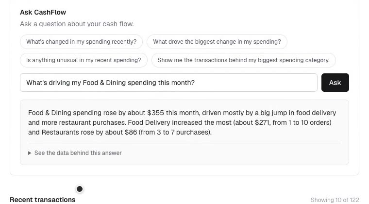

Financial infrastructure can retrieve and categorize transaction data. But understanding what actually changed in your money, why it changed, and which transactions caused it still takes work.
I built CashFlow to explore the layer above that infrastructure.
Following one transaction from the bank feed to a grounded answer.
What if connected financial data could explain itself?
Bank transactions contain a lot of information, but turning transaction history into an answer like "Why did I spend more this month?" still takes work.
The opportunity I wanted to explore was not another financial data provider. It was the interpretation layer on top of that data.
A working prototype that turns connected transaction data into understandable cash flow analysis, and lets users ask questions about what is happening with their money.
People can ask the questions they actually have:

Most of this pipeline already exists. CashFlow is the last two steps, where raw data becomes something a person can understand.
Raw transaction history
Retrieves connected transaction data
Turns messy transaction descriptors into useful merchant and category information
Calculates cash flow, category changes, comparison periods and patterns
Turns grounded calculations into conversational answers
I initially explored transaction categorization before recognizing that Plaid already provides enrichment. Rather than rebuild infrastructure that already exists, I used it as an input and focused CashFlow on the interpretation layer above it.
Financial answers need to be trustworthy. CashFlow calculates totals, category changes and comparison periods deterministically first. The LLM explains those grounded outputs instead of inventing or calculating financial facts itself.
An early version compared a partial September with a complete August. The math was correct, but the insight was misleading. I changed the analysis to compare equivalent elapsed periods so changes reflect actual behavior rather than calendar length.
Stripe's sandbox transactions were useful for validating the data pipeline but repetitive and poor at demonstrating the customer experience. I created clearly labeled realistic demo transactions across housing, groceries, dining, transport and travel so the product idea could actually be evaluated.
The first version was essentially a cash flow dashboard. It could tell me where money went, but the user still had to interpret the dashboard.
I added deterministic insights such as changes in categories and spending patterns. This surfaced another issue: technically correct comparisons can still create misleading product insights.
I added Ask CashFlow so users could ask the question they actually cared about, while grounding the response in calculated financial data and supporting transactions.
Stripe and Plaid use their own sandbox transaction fixtures, so an arbitrary Stripe sandbox transaction cannot be passed through Plaid's sandbox enrichment flow end to end.
Rather than fake the integration, I kept the validated integrations separate and clearly labeled simulated enrichment in the demo while designing the production flow around real transaction data.
Good financial AI starts with trustworthy data, not the model.
A technically correct insight can still be a bad product insight if the comparison is misleading.
The most useful product layer is not always another piece of infrastructure. Sometimes the opportunity is making existing infrastructure understandable.
Product concept, product decisions, prototype and iteration by Radhika Sahani.
Built using AI coding tools, alongside: